Common name in Tamil : Marama maram
Common name in Telugu : Kalinga, kyalanki
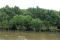
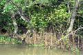
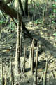
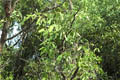
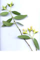
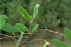
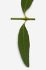
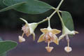
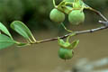
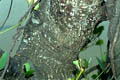
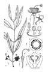
Diagnostic characters
Botany & morphology
Regeneration
Reproductive biology
Ecology
Distribution
Uses
Evergreen trees with black smooth bark, wood grey; pneumatophores erect. Flowers white; fruits large, depressed – globose.
Leaves simple, opposite, short petiolate, decussate, elliptic - oblong, obovate, apex tapering, base attenuate, 4 - 10 x 2 - 3 cm, coriaceous, glaucous on both sides.
Inflorescence axillary, 3 - flowered cymes.
Flowers large, regular, bisexual, white or yellowish white, 1.5 - 5 cm across; calyx 4 - lobed, reflexed, slightly connate with ovary; petal absent; stamens numerous, filaments bent inwards in bud; ovary 2 - 20 celled, stigma large, umbrella shaped.
Fruits globose berry seated on the flattened calyx-tube, 2 - 2.5 cm across, many seeded.
Pneumatophores 60 – 150 cm long, arising from horizontal roots, corky, forked twice or thrice, associated with anchor roots and nutrition roots.
Epigeal or modified epigeal germination.
Pollination by bats and moths.
Gregarious along the intertidal estuarine regions of mangrove forests, often as a pioneer species on newly formed mudflats.
In India both the coast from Bombay to Sunderbans. In Sri Lanka, Koddiyarstem island. And in Myanmar, Moulmein.
Stem is used for paper pulp, matches, and as poles, leaves as fodder. Its fruits are used as vegetable.
Top of the page